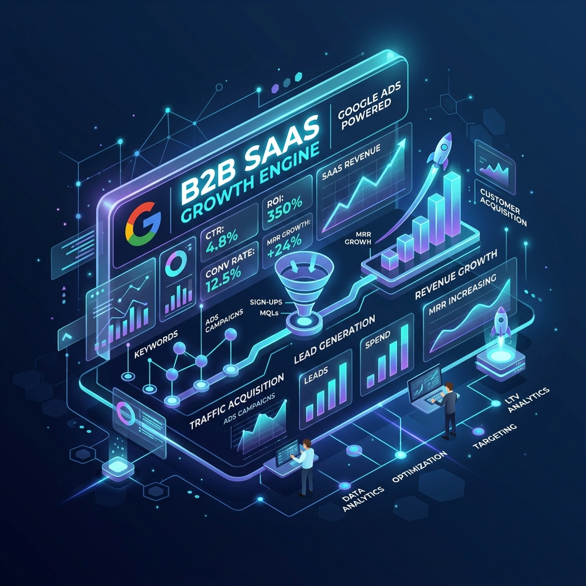

An Australian HR-tech founder came to us with a validated idea and no MVP. We designed, built and launched a full B2B SaaS platform that reached AUD $2.1M ARR within 18 months of launch — without a single line of legacy code to slow us down.

James Whitfield had spent 14 years in HR leadership at three major Australian retail chains. He had seen, first-hand, the same problem play out across every organisation he worked in: small and mid-sized Australian businesses (20–200 employees) were drowning in HR compliance obligations — Fair Work Act requirements, Modern Award interpretation, leave management, performance documentation — but couldn’t afford enterprise HR software like Workday or SAP SuccessFactors.
The market was clear: 420,000 Australian SMBs employed between 20–200 people. Existing solutions were either enterprise systems built for 500+ employees (overkill and overpriced) or basic leave management apps with no compliance intelligence. The gap in the market was a purpose-built, compliance-focused HR platform priced for SMBs at AUD $149–$299/month.
James had done 60+ customer discovery interviews, secured 18 letters of intent from prospective customers and had AUD $320,000 in pre-seed capital. What he didn’t have was a technical co-founder, an engineering team, or any existing code. He needed a development partner who could think like a startup co-founder and build like an elite engineering team.
We structured the 18-month build around three distinct phases: MVP, growth, and scale — each designed to generate revenue and validate assumptions before doubling down.
We spent 6 weeks on architecture before writing a single line of application code. The multi-tenant data model was designed with row-level security in PostgreSQL to ensure complete data isolation between accounts. The React component library was built as a design system first — ensuring visual consistency across the entire product even as 4 developers worked in parallel. This upfront investment prevented the technical debt that kills early-stage SaaS companies.
The MVP launched in Month 6 with the 6 modules identified as highest-priority by the LOI holders: employee records management, leave management (Fair Work Act compliant), digital onboarding documents, performance review templates, payroll integration (Xero API) and a compliance alerts feed. All 18 LOI holders converted to paid at launch. Month 7 MRR: AUD $4,200 from 18 customers — proof that the product solved a real problem.
With product-market fit validated, we shifted focus to growth infrastructure: a self-serve free trial flow, in-app onboarding checklists powered by Intercom, Stripe subscription management with annual billing discounts, and a referral engine offering clients one month free for each successful referral. We also built a Zapier integration allowing WorkSync to connect with 200+ tools. By Month 12, the platform had 340 paying subscribers at an average MRR of AUD $58,000.
Demand from larger businesses (50–200 employees) led us to build an Enterprise tier featuring SSO (SAML 2.0), custom role hierarchies, bulk employee management tools, an HR analytics dashboard and a dedicated account manager onboarding flow. The Enterprise tier launched at AUD $499/month and immediately attracted 24 customers in the first 90 days, adding AUD $143,000 to the ARR in a single quarter.
The most complex feature of the entire build: an AI-powered compliance assistant that reads a business’s industry, size, location and employee composition and surfaces the specific Fair Work obligations and Modern Award provisions that apply to that business. Using a combination of a curated compliance knowledge base and GPT-4 for natural language Q&A, the engine answers compliance questions with cited sources and flags regulatory changes as they occur. This feature drove a 34% reduction in trial-to-paid churn rate within 8 weeks of launch.
From zero to a funded, revenue-generating SaaS product with a loyal customer base and a platform built to scale to 10,000+ subscribers.
Every technology decision was made with 10,000 subscribers in mind — not just the first 100. Premature optimisation kills startups; insufficient architecture kills SaaS businesses at scale.